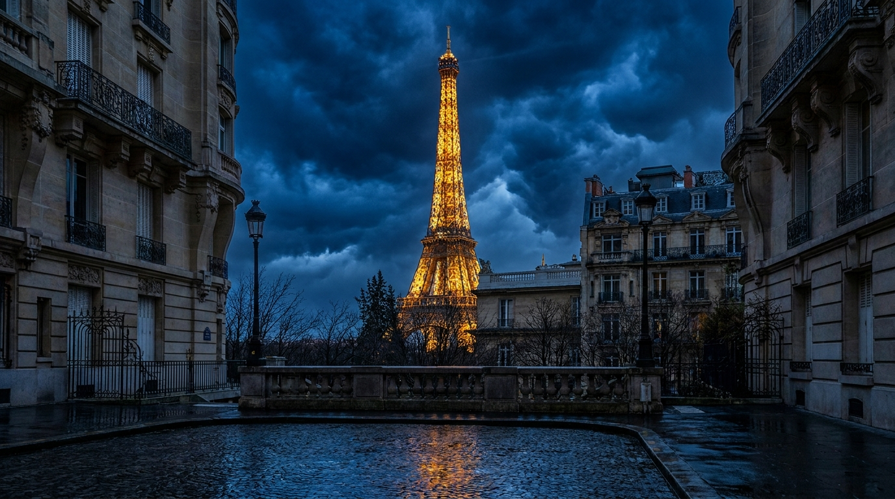
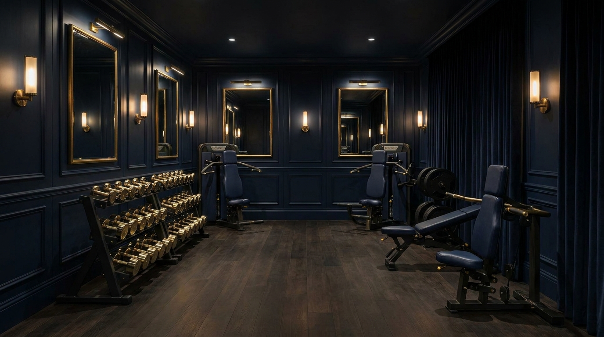
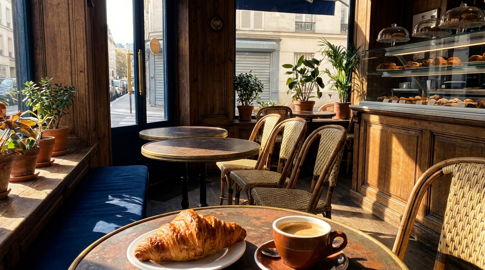
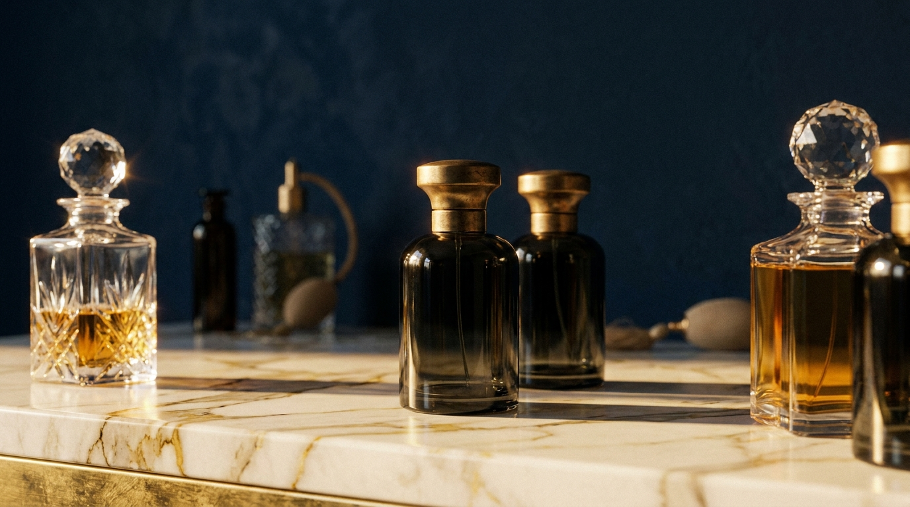
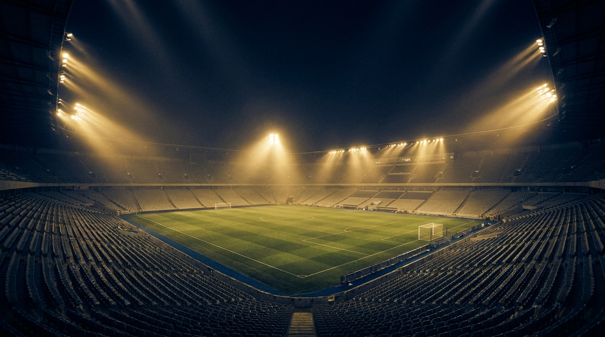

أفضل للحديد · أفضل للمسافر · أفضل للتصوير · أكثر خيّب ظني · الفائز 🏆

طهاة Ferrandi · بالإنجليزي · من 59€. «أرفع حديد بس أقدر أطوي عجين؟»
الجدران تتحرّك حولك. ⚠️ تأكّد من برنامج يوليو (معرض النهضة ينتهي ٢٨ يونيو).
١.٥كم عظام · تذكرة مسبقة بوقت محدد · ~31€ · مسكّر الإثنين. توتر حقيقي.
التجربة العاطفية: جولة + غرفة الملابس + زيبلاين فوق الملعب. (تفاصيله بالقسم الأخير).
ساعة برّ + ساعة نهر · ~$97 · إغلاق سينمائي.
لكل تجربة: سبب · مشاهد · جملة قبل · لحظة أثناء · طلعت مثل توقعي؟ · تقييم /10.

كل عطر: يشبهني؟ /10 ⭐ · فخامة /10 · ألبسه يومي؟ · السعر يستاهل؟ (بعد كشفه). + تحدّي الأعمى: أصبت الغالي؟
سافرت فرنسا عشان أصنع عطر يمثّلني · لو FZX عطر وش ريحته؟ · التست الأعمى: غلا العطر = جودته؟
